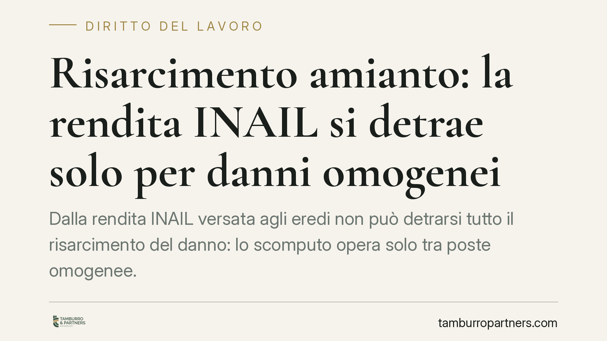

Risarcimento amianto: la rendita INAIL si detrae solo per danni omogenei
Dalla rendita INAIL versata agli eredi non può detrarsi tutto il risarcimento del danno: lo scomputo opera solo tra poste omogenee. Un principio consolidato dalle Sezioni Unite del 2018 e decisivo nelle cause da mesotelioma, dove si discute se l'indennità previdenziale copra davvero gli stessi pregiudizi liquidati in sede civile. Il tema tocca lavoratori esposti all'amianto e loro familiari.

Il principio: compensatio lucri cum damno
Quando un soggetto riceve, in conseguenza dello stesso fatto illecito, sia un risarcimento sia un beneficio economico (ad esempio una rendita previdenziale), la legge impedisce che la vittima si arricchisca cumulando le due voci. È la cosiddetta compensatio lucri cum damno: il vantaggio ottenuto si sottrae dal danno risarcibile, per evitare duplicazioni.
Il punto delicato è stabilire *quando* la sottrazione è legittima. La risposta è netta: solo se la prestazione previdenziale copre esattamente lo stesso pregiudizio che il risarcimento mira a ristorare. In mancanza di questa identità, lo scomputo non è ammesso.
L'inquadramento normativo
La detraibilità della rendita INAIL non discende dal solo art. 1223 c.c., che individua il danno risarcibile come perdita subita e mancato guadagno. Il meccanismo si fonda sul sistema della surroga: ai sensi dell'art. 1916 c.c., l'assicuratore (qui l'INAIL) subentra nei diritti dell'assicurato verso il responsabile, nei limiti di quanto erogato. Da qui l'esigenza di scomputare l'indennità, ma solo per la parte che corrisponde alla medesima posta.
La disciplina indennitaria è contenuta nel DPR 1124/1965 (Testo Unico INAIL) e, per il danno biologico, nel D.Lgs. 38/2000, che ha introdotto l'indennizzo del danno alla persona entro soglie e tabelle predeterminate. L'INAIL indennizza il danno biologico e la perdita di capacità lavorativa; non copre, invece, il danno da perdita del rapporto parentale patito dai familiari, né le componenti morali che eccedono la copertura previdenziale.
Il quadro interpretativo è stato fissato dalle Sezioni Unite della Cassazione del 22 maggio 2018, nn. 12564-12567, che hanno subordinato lo scomputo all'esistenza di una funzione omogenea tra la prestazione e la voce di danno. Le pronunce successive hanno confermato l'approccio, escludendo automatismi fondati sulla mera appartenenza alla stessa categoria generale di danno. Va segnalato che circola notizia di un'ulteriore ordinanza del 2026 su un caso di mesotelioma presso l'Arsenale di Taranto: il dato va trattato come da verificare nel numero e nella data, ma, ove confermato, si collocherebbe in continuità con questo filone, non come novità isolata.
Il danno differenziale
Da questo impianto nasce la categoria del danno differenziale: è ciò che residua a favore del danneggiato dopo aver sottratto, voce per voce, quanto già coperto dall'INAIL. Il giudice deve procedere a un confronto analitico tra le singole poste risarcitorie e le componenti della rendita. Solo le voci effettivamente sovrapponibili si elidono; tutto il resto resta dovuto dal responsabile civile.
Nei casi di mesotelioma da amianto questo significa, in concreto, che la rendita erogata agli eredi non può azzerare il risarcimento del danno parentale, che l'INAIL non indennizza.
Prescrizione e malattie a lunga latenza
Le patologie asbesto-correlate si manifestano a distanza di decenni dall'esposizione. Il termine di prescrizione dell'azione di risarcimento è quello dell'illecito (art. 2947 c.c.), ma il momento di decorrenza va individuato secondo l'art. 2935 c.c.: il termine inizia a decorrere dal giorno in cui il diritto può essere fatto valere, cioè dalla conoscibilità della malattia e del suo nesso con l'esposizione. Nelle patologie a lunga latenza il *dies a quo* si sposta quindi in avanti, a tutela di chi scopre tardivamente la patologia.
Implicazioni pratiche
Per il lavoratore malato e per gli eredi, il principio ha un effetto concreto: la liquidazione del danno non può essere compressa con lo scomputo indiscriminato della rendita. Occorre pretendere un calcolo per singole voci, distinguendo ciò che l'INAIL copre da ciò che resta integralmente risarcibile.
Sul piano processuale, la vicenda spesso si sdoppia: all'azione civile può affiancarsi un procedimento penale (per lesioni o omicidio colposo da violazione delle norme antinfortunistiche). In quella sede è possibile la costituzione di parte civile, utile per far valere le medesime pretese risarcitorie e per accedere al materiale probatorio raccolto nelle indagini.
Cosa fare in concreto
- Ricostruite la storia espositiva: raccogliete documentazione lavorativa, mansioni e luoghi di esposizione, anche risalenti nel tempo.
- Acquisite gli atti INAIL: verificate quali voci di danno la rendita copre effettivamente, per isolare il danno differenziale.
- Fate valutare il nesso causale da un medico-legale, con particolare attenzione alla data di conoscibilità della patologia.
- Verificate i termini di prescrizione alla luce del dies a quo mobile previsto per le malattie a lunga latenza.
- Valutate la doppia via civile e, dove ricorrano i presupposti, la costituzione di parte civile nel procedimento penale.
---
*Contributo informativo a cura di Tamburro & Partners - Avv. Giuseppe Tamburro. Non costituisce parere legale.*
Ogni storia di lavoro ha i suoi tempi.
Se gestisci HR e vuoi un confronto su contenzioso, ispezioni o licenziamenti, scrivi allo studio. Ti rispondiamo entro un giorno lavorativo.